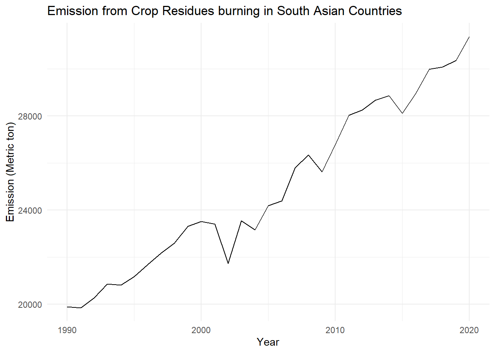
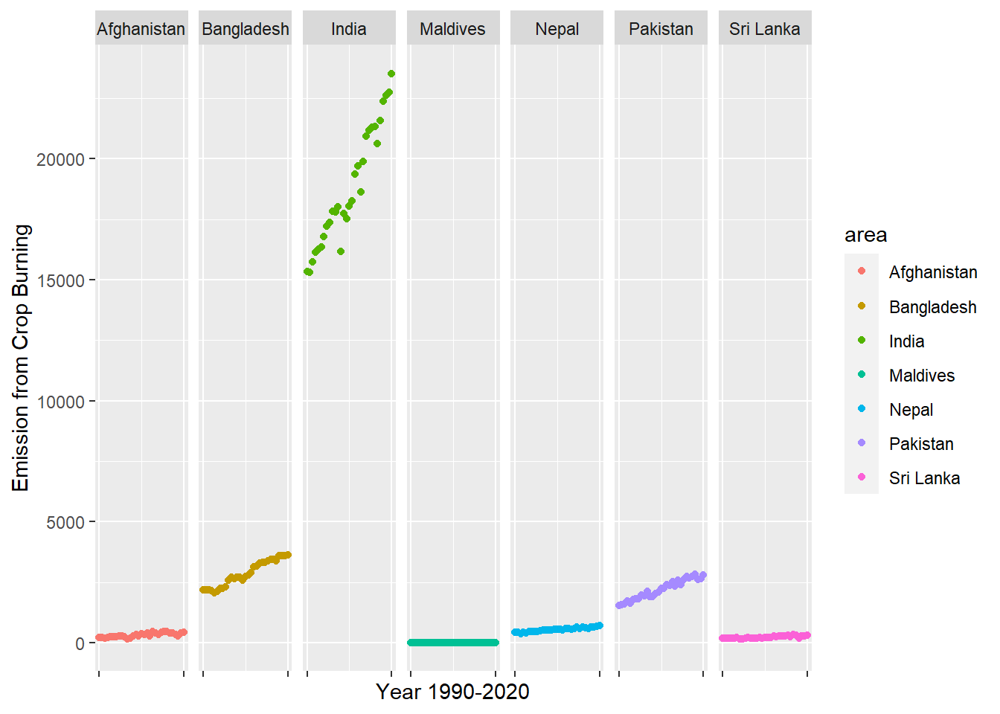
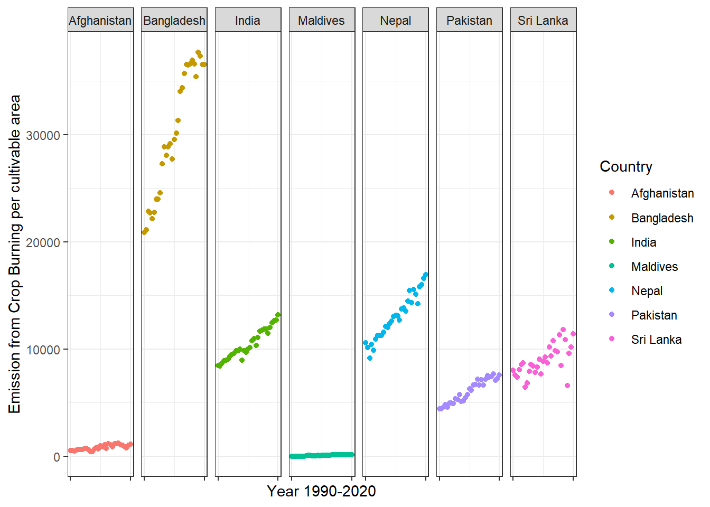
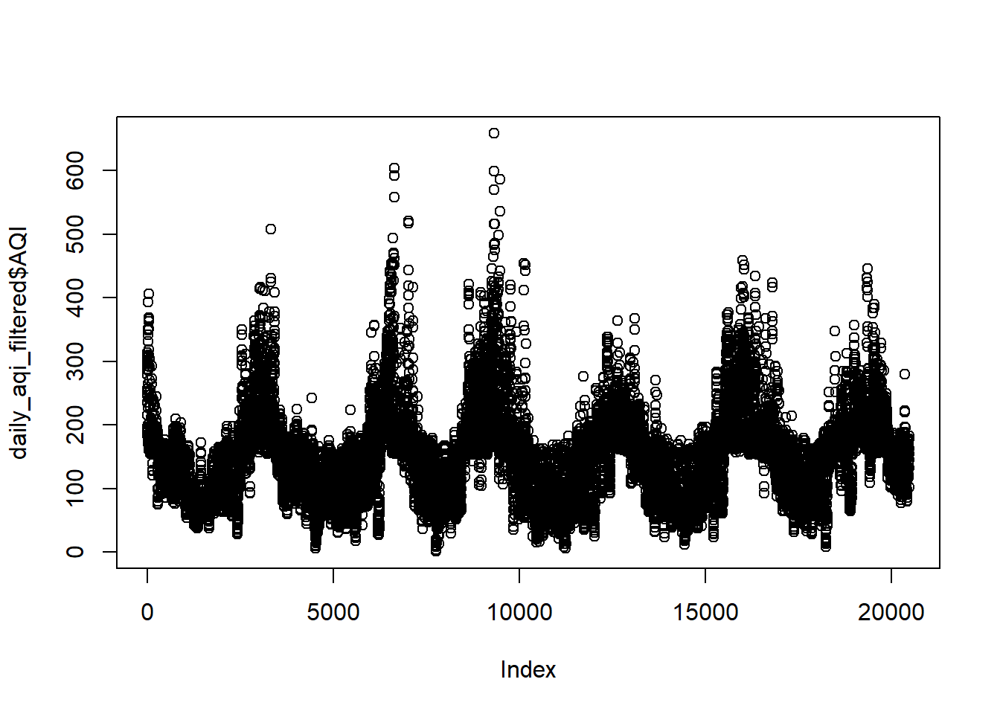

investigate burning or decomposing of crop residues context in South Asia and its contribution to air pollution
Running Code
When you click the Render button a document will be generated that includes both content and the output of embedded code. You can embed code like this:
##Load all required librarieslibrary(tidyverse)
── Attaching core tidyverse packages ──────────────────────── tidyverse 2.0.0 ──
✔ dplyr 1.1.2 ✔ readr 2.1.4
✔ forcats 1.0.0 ✔ stringr 1.5.0
✔ ggplot2 3.4.3 ✔ tibble 3.2.1
✔ lubridate 1.9.2 ✔ tidyr 1.3.0
✔ purrr 1.0.2
── Conflicts ────────────────────────────────────────── tidyverse_conflicts() ──
✖ dplyr::filter() masks stats::filter()
✖ dplyr::lag() masks stats::lag()
ℹ Use the conflicted package (<http://conflicted.r-lib.org/>) to force all conflicts to become errors
here() starts at C:/Users/sujan/OneDrive/Documents/MEDS/website/sujan-bhattarai12.github.io
library(janitor)
Attaching package: 'janitor'
The following objects are masked from 'package:stats':
chisq.test, fisher.test
##read the data and clean the name data_world_bank <-read_csv(here("posts", "southAsia_crop","data","Agrofood_co2_emission.csv"),show_col_types =FALSE) %>% janitor::clean_names()#filter data for south asiasouth_asian_countries <-c("Nepal", "India", "Bangladesh", "Sri Lanka", "Pakistan","Afghanistan", "Maldives")#just filter for south asian regionsouth_asian_data <- data_world_bank %>%filter(area %in%c(south_asian_countries)) %>%mutate(year =as.numeric(year))
The emission data has been prepared for south Asia. Now, bring the air quality data of south Asian nations from the world bank database. Clean, transform and arrange the data.
##read the data and transpose it to form a database#link to the data: aqi_world_bank1 <-read_csv(here("posts", "southAsia_crop","data", "aqi.csv")) %>%clean_names() %>%t()
Rows: 6 Columns: 35
── Column specification ────────────────────────────────────────────────────────
Delimiter: ","
chr (4): Series Name, Series Code, Country Name, Country Code
dbl (31): 1990 [YR1990], 2000 [YR2000], 2013 [YR2013], 2014 [YR2014], 2015 [...
ℹ Use `spec()` to retrieve the full column specification for this data.
ℹ Specify the column types or set `show_col_types = FALSE` to quiet this message.
Warning: There was 1 warning in `mutate()`.
ℹ In argument: `year = as.numeric(sub(".*yr(\\d{4}).*", "\\1", year1))`.
Caused by warning:
! NAs introduced by coercion
##filter only those rows where column is not equal to NAaqi_world_bank <- aqi_world_bank %>%filter(!is.na(year))##select only required columns and rename bad-columns aqi_world_bank <- aqi_world_bank %>%select(year = year, 'aqi_value'='V2') %>%rownames_to_column(var ="RowID") %>%#drop the index, not requiredselect(-RowID)##arrange the data based on numeric columnsaqi_world_bank <- aqi_world_bank %>%arrange(year) %>%mutate(year =as.numeric(year))
The air quality data has been downloaded and cleaned as required. The next step is to combine the data frames and keep only the required columns
##filter columns from the first dataset SA_reduced_columns <- south_asian_data %>%select(area, year, crop_residues, average_temperature_c)##group by year and summarize for all countriesSA_summarized <- SA_reduced_columns %>%group_by(year) %>%summarize(crop_residues =sum(crop_residues),temp_average =mean(average_temperature_c))##left join with aqi world bank SA_emission <-left_join(SA_summarized, aqi_world_bank, by ="year") %>%mutate(aqi_value =as.numeric(aqi_value))
# perform exploratory data analysis ggplot(SA_emission, aes(x = year, crop_residues)) +geom_line (stat ="identity", fill ="skyblue", color ="black") +labs(title ="Emission from Crop Residues burning in South Asian Countries",x ="Year",y ="Emission (Metric ton)") +theme_minimal()
Warning in geom_line(stat = "identity", fill = "skyblue", color = "black"):
Ignoring unknown parameters: `fill`

##autoplot# fit a regression model of air quality# independently check crop residues with air quality# include temperature with aqi index, adding interaction between crop residuesggplot(SA_emission, aes(year, aqi_value)) +geom_line(color ="blue") +labs(title ="Average air quality increase in South Asian Countries since 1990",x ="Year",y ="AQI value") +ylim(c(0, 10))+theme_minimal()
#correlation between these two plotscor(SA_emission$aqi_value, SA_emission$crop_residues)
[1] -0.1064666
There’s already a hint that AQI is not related to crop residues if taken account the factor of annual basis since the correlation is very weak. But, lets see what the model has to say:
Try transforming data, or smoother the data to detect the pattern
##without strong correlation, I cannot use the linear regression model##which means my estimation of the coeffcients would be insignificantMODEL =lm(data = SA_emission, aqi_avearge ~ crop_residues)summary(MODEL)
Call:
lm(formula = aqi_avearge ~ crop_residues, data = SA_emission)
Residuals:
Min 1Q Median 3Q Max
-1.14733 -0.02743 0.10028 0.21069 0.33201
Coefficients:
Estimate Std. Error t value Pr(>|t|)
(Intercept) 3.364e+00 7.429e-01 4.528 0.00023 ***
crop_residues 9.790e-05 2.765e-05 3.540 0.00219 **
---
Signif. codes: 0 '***' 0.001 '**' 0.01 '*' 0.05 '.' 0.1 ' ' 1
Residual standard error: 0.3485 on 19 degrees of freedom
(10 observations deleted due to missingness)
Multiple R-squared: 0.3975, Adjusted R-squared: 0.3657
F-statistic: 12.53 on 1 and 19 DF, p-value: 0.002186
Based on the model, there is statistical relationships between air quality index at 95% significance level. Thus, I reject the null hypothesis.
Since there is association between air quality and emission from crop burning, the next steps involves finding the south Asian country has the highest emission.
#further data explorationggplot(south_asian_data, aes(year, crop_residues, color = area)) +geom_point() +facet_grid(cols =vars(area)) +labs(x ="Year 1990-2020",y ="Emission from Crop Burning" ) +theme(# Remove x-axis titleaxis.text.x =element_blank() # Remove x-axis labels )+scale_x_continuous(breaks =seq(min(south_asian_data$year), max(south_asian_data$year), by =30)) # Adjust the breaks as needed

# Save the plotggsave("explore.png", width =10, height =5)
If this graph tells India has the highest value(which should make sense since it has the highest area). Normalize the area by cultivable total-agricultural land in South Asia. Fetch the data from world-bank.
#create a dataframe including values for agricultural land in these countriestotal_agri_area <-read_csv(here("posts", "southAsia_crop","data", "area_sa.csv"))
Rows: 266 Columns: 66
── Column specification ────────────────────────────────────────────────────────
Delimiter: ","
chr (3): Country Name, Country Code, Indicator Code
dbl (61): 1961, 1962, 1963, 1964, 1965, 1966, 1967, 1968, 1969, 1970, 1971, ...
lgl (2): 1960, 2022
ℹ Use `spec()` to retrieve the full column specification for this data.
ℹ Specify the column types or set `show_col_types = FALSE` to quiet this message.
# Divide crop residues by total agricultural land ##SA_asian_data has the required ID for the divisionnormalized_area <-left_join(south_asian_data, transposed, by =c("area", "year")) normalized_area <- normalized_area %>%mutate( norm_crop_residue = crop_residues/area_cultivable *10^6)
## now normalize the areaggplot(normalized_area, aes(year, norm_crop_residue, color = area))+geom_point()+facet_grid(cols =vars(area), scales ="free_x")+theme_bw()+theme(axis.text.x =element_blank())+scale_color_discrete(name ="Country") +labs(x ="Year 1990-2020",y ="Emission from Crop Burning per cultivable area" ) +theme(# Remove x-axis titleaxis.text.x =element_blank() # Remove x-axis labels )+scale_x_continuous(breaks =seq(min(south_asian_data$year), max(south_asian_data$year), by =30)) # Adjust the breaks as needed

# Save the plotggsave("explore2.png", width =10, height =5)
So, there’s the issue. Bangladesh has so much burn of crop residues per cultivable land. After that, we have Nepal (this is my country)
Now, Bangladesh has the greatest emissions from crop residues in South Asia. So, how strong is the relationship between crop residues and air quality?
# just work for bangladesh# Your initial datadata <-c(52.90993831, 51.64362616,53.74695817, 55.06194439, 56.41649854, 60.5358739, 68.94271136, 66.42738113, 73.27082296, 68.97033719, 67.7673598, 62.75318316, 63.27546257)# Duplicate the first two values four times eachdata <-c(rep(data[1:5], each =4), data[3:length(data)])# Create a data frame with a single columnBangladesh <-data.frame(aqi_value = data)
#combine this with SA Data for Bangladesh onlybangladesh_filtered <- normalized_area %>%filter(area =="Bangladesh") %>%cbind(Bangladesh)
##test the model heremodel_bangladesh <-lm(data = bangladesh_filtered, aqi_value ~ crop_residues)summary(model_bangladesh)
Call:
lm(formula = aqi_value ~ crop_residues, data = bangladesh_filtered)
Residuals:
Min 1Q Median 3Q Max
-7.502 -1.442 -0.367 1.563 11.405
Coefficients:
Estimate Std. Error t value Pr(>|t|)
(Intercept) 32.049523 3.708684 8.642 1.62e-09 ***
crop_residues 0.008853 0.001278 6.925 1.31e-07 ***
---
Signif. codes: 0 '***' 0.001 '**' 0.01 '*' 0.05 '.' 0.1 ' ' 1
Residual standard error: 3.768 on 29 degrees of freedom
Multiple R-squared: 0.6231, Adjusted R-squared: 0.6101
F-statistic: 47.95 on 1 and 29 DF, p-value: 1.307e-07
Now, its sure there is some evidence, plot if there is seasonality in air quality index value rising up. Based on my knowledge, there should be a seasonality at specific part of the month every year where crop residues contributes the most.
Fetch the hourly data of Bangladesh, aggregate based on days and observe the seasonality.
files_list <-list.files(here("posts", "southAsia_crop", "data"), pattern ="^Dhaka.*\\.csv$")daily_aqi <-data.frame()# Loop through each file name and read the datafor (file in files_list) { file_path <- here::here("posts", "southAsia_crop", "data", file) # Adjust the path accordingly x <- readr::read_csv(file_path) daily_aqi <- dplyr::bind_rows(daily_aqi, x)}
Rows: 8784 Columns: 8
── Column specification ────────────────────────────────────────────────────────
Delimiter: ","
chr (4): Date (LT), Conc. Unit, AQI Category, QC Name
dbl (4): Hour, NowCast Conc., Raw Conc., AQI
ℹ Use `spec()` to retrieve the full column specification for this data.
ℹ Specify the column types or set `show_col_types = FALSE` to quiet this message.
Rows: 8760 Columns: 8
── Column specification ────────────────────────────────────────────────────────
Delimiter: ","
chr (4): Date (LT), Conc. Unit, AQI Category, QC Name
dbl (4): Hour, NowCast Conc., Raw Conc., AQI
ℹ Use `spec()` to retrieve the full column specification for this data.
ℹ Specify the column types or set `show_col_types = FALSE` to quiet this message.
Rows: 6738 Columns: 8
── Column specification ────────────────────────────────────────────────────────
Delimiter: ","
chr (4): Date (LT), Conc. Unit, AQI Category, QC Name
dbl (4): Hour, NowCast Conc., Raw Conc., AQI
ℹ Use `spec()` to retrieve the full column specification for this data.
ℹ Specify the column types or set `show_col_types = FALSE` to quiet this message.
Rows: 8653 Columns: 8
── Column specification ────────────────────────────────────────────────────────
Delimiter: ","
chr (4): Date (LT), Conc. Unit, AQI Category, QC Name
dbl (4): Hour, NowCast Conc., Raw Conc., AQI
ℹ Use `spec()` to retrieve the full column specification for this data.
ℹ Specify the column types or set `show_col_types = FALSE` to quiet this message.
Rows: 8537 Columns: 8
── Column specification ────────────────────────────────────────────────────────
Delimiter: ","
chr (4): Date (LT), Conc. Unit, AQI Category, QC Name
dbl (4): Hour, NowCast Conc., Raw Conc., AQI
ℹ Use `spec()` to retrieve the full column specification for this data.
ℹ Specify the column types or set `show_col_types = FALSE` to quiet this message.
Rows: 8352 Columns: 8
── Column specification ────────────────────────────────────────────────────────
Delimiter: ","
chr (4): Date (LT), Conc. Unit, AQI Category, QC Name
dbl (4): Hour, NowCast Conc., Raw Conc., AQI
ℹ Use `spec()` to retrieve the full column specification for this data.
ℹ Specify the column types or set `show_col_types = FALSE` to quiet this message.
Rows: 3531 Columns: 8
── Column specification ────────────────────────────────────────────────────────
Delimiter: ","
chr (4): Date (LT), Conc. Unit, AQI Category, QC Name
dbl (4): Hour, NowCast Conc., Raw Conc., AQI
ℹ Use `spec()` to retrieve the full column specification for this data.
ℹ Specify the column types or set `show_col_types = FALSE` to quiet this message.
##filter where all air quality index values are -999daily_aqi_filtered <- daily_aqi %>%filter(!AQI ==-999)
It’s not useful to conduct time-series analysis by a Daily basis, because crop burning depends every month and not daily. For example: villagers might burn crop residues only in those where there’s less wind. And since thousands of villagers exist, they will burn it on a different day. But, there is no online source where I could find monthly data of crop emission. So, we will plot time series for montly air quality.
library(feasts)daily_aqi_filtered <- daily_aqi_filtered %>%mutate(date_column =as.Date(daily_aqi_filtered$`Date (LT)`, format ="%m/%d/%Y %H:%M")) %>%na.omit()plot(daily_aqi_filtered$AQI)

library(tsibble)
Attaching package: 'tsibble'
The following object is masked from 'package:lubridate':
interval
The following objects are masked from 'package:base':
intersect, setdiff, union
library(forecast)
Registered S3 method overwritten by 'quantmod':
method from
as.zoo.data.frame zoo
`summarise()` has grouped output by 'year'. You can override using the
`.groups` argument.
##convert this to tsibbledf <- monthly_aggregated %>%mutate(date =yearmonth(date_column))df <-as_tsibble(df, index = date)df <- df[c('date', 'aqi_sum')]df %>%stl(t.window =13, s.window ="periodic", robust =TRUE) %>%autoplot() +ggtitle("STL Decomposition") +labs(x ="Time", y ="Value") +theme_minimal() +theme(plot.title =element_text(size =16, face ="bold"),axis.title =element_text(size =14),axis.text =element_text(size =12),legend.title =element_blank(),legend.text =element_text(size =12))
For this time series, I don’t expect seasonality based on my knowledge. But, decompose and observe if that is wrong. There’s seasonality. To understand the relationships, monthly data is required, which I could not find.
However, we can forecast using multiple forecasting model to see the best model that can predict the best. Seems like the combination model works best.
Bangladesh_crop <-ts(bangladesh_filtered$crop_residues, start=1990, frequency=1)train <-window(Bangladesh_crop, end=2010)h <-20# Forecasting for the next 5 years (12 months per year)ETS <-forecast(ets(train), h=h)ARIMA <-forecast(auto.arima(train, lambda=0, biasadj=TRUE), h=h)NNAR <-forecast(nnetar(train), h=h)TBATS <-forecast(tbats(train, biasadj=TRUE), h=h)# Combine forecasts for the next 5 yearsCombination <- (ETS[["mean"]] + ARIMA[["mean"]] + NNAR[["mean"]] + TBATS[["mean"]]) /4